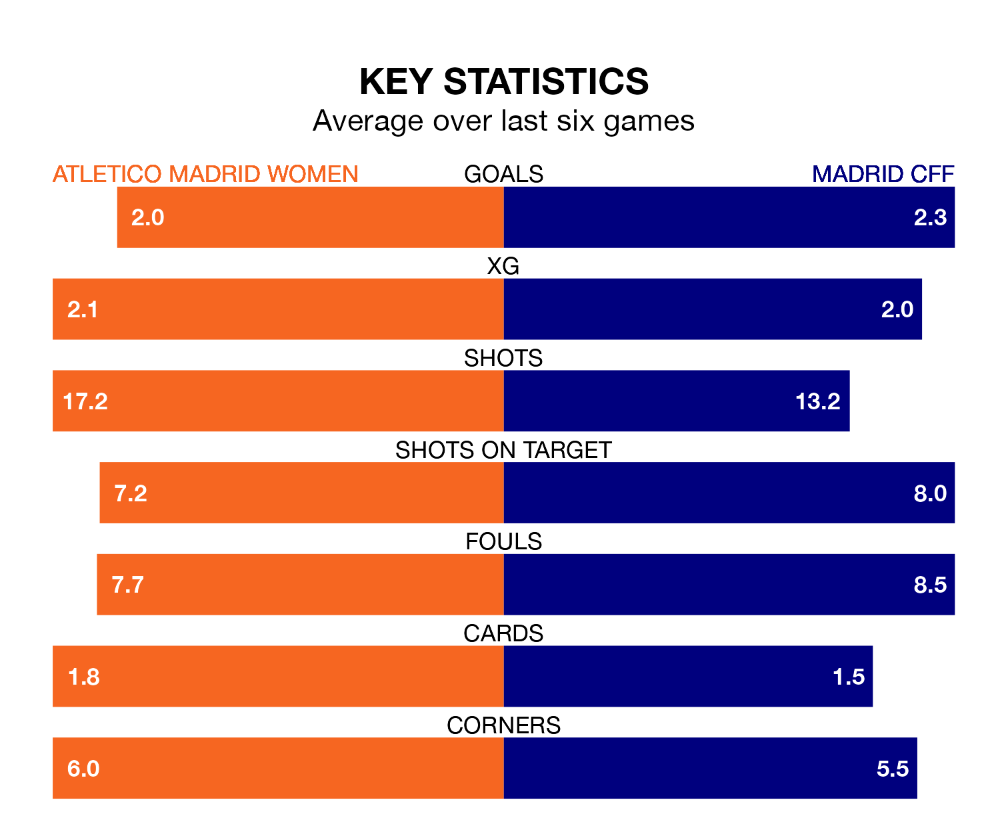

Madrid CFF face a challenge to maintain their high-scoring form away against a tight Atletico Madrid Women defence on Sunday.
With 39 goals in 16 games, Madrid CFF are the third-highest scorers in Primera Division Women ahead of the 3pm kick-off at Centro Deportivo Alcalá de Henares.
They face an Atletico Madrid side who have scored 31 in 15 matches, but conceded only 11 goals, putting them third among the league's tightest defences – only Barcelona Women and Levante Women have conceded fewer goals.
In Sheila Guijarro Gómez, Atletico Madrid have one of the league's most on-form strikers so far this season. She has notched 11 goals in 15 appearances, to sit second in the scoring charts.
Her goal rate of one every 113 minutes is quicker than that of Racheal Kundanaji, Madrid CFF's top scorer with a goal every 135 minutes, and a total of eight goals in 14 games.
In the last 10 years, Atletico Madrid and Madrid CFF have played each other on 13 occasions. Atletico Madrid won eight of them, Madrid CFF one, and they drew four times.
On average, Atletico Madrid scored 2.2 goals and Madrid CFF 0.9 in those matches.
Their last meeting was on November 19, when Atletico Madrid won 4-1 away.
The away side are fourth in the table after 16 games, of which they have won 10 and drawn two, earning 32 points.
The hosts are one place behind Madrid CFF in fifth, with nine wins and three draws putting them on 30 points.
Atletico Madrid are in reasonable form in Primera Division Women, with three wins and two draws from their last six games.
And also with three wins and two draws over that period, Madrid CFF's form is identical – they have both taken 11 points from 18.
Atletico Madrid's last match was on February 3, a 1-0 loss against Levante Women.
Madrid CFF drew 3-3 with Sevilla Women last time out, also on February 3, with Giovana Queiroz, Lucía Pardo Méndez and Monica Hickmann Alves on the scoresheet.
Updated: 13:52 (UTC), 05/02/24